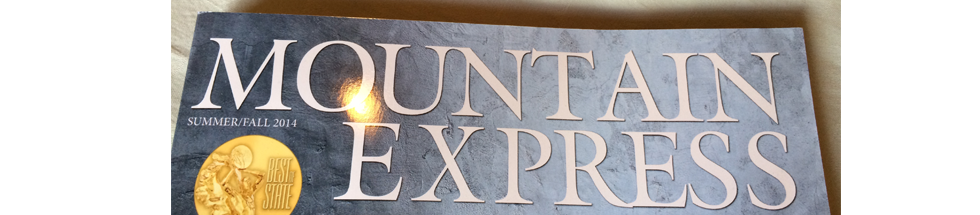

Kearning
It's the little things
Tom Murphy July 10, 2014
Noticed this masthead kearning the other morning and now it is taunting me.

Tom Murphy July 10, 2014
Noticed this masthead kearning the other morning and now it is taunting me.